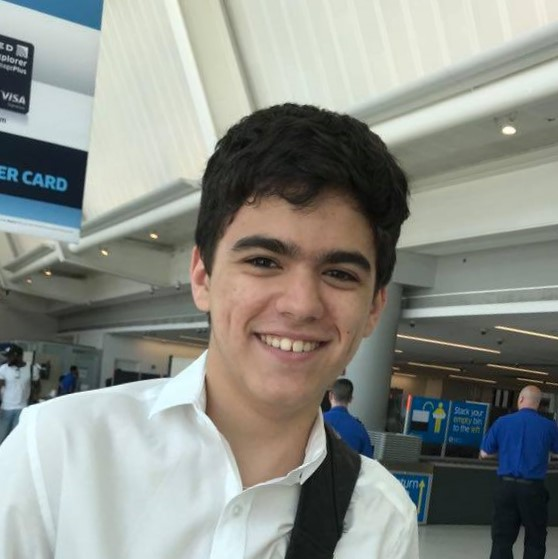
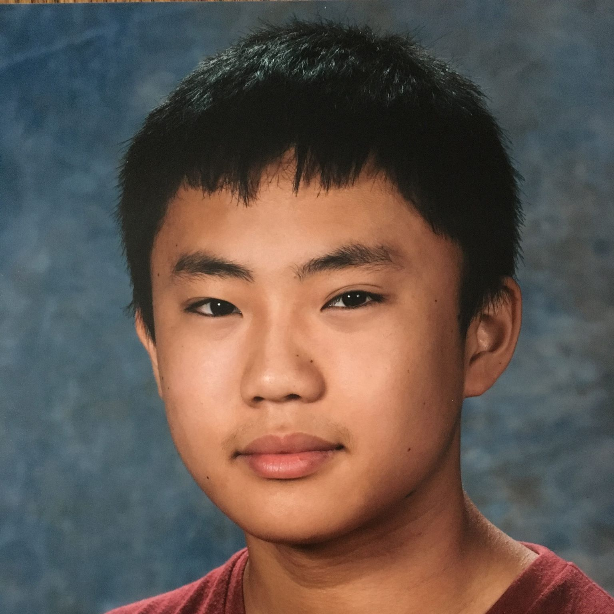
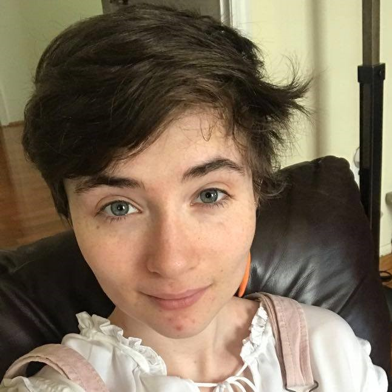

Our Team
Our team is composed of 4 rising college sophomores, all Millburn High School alumni. We all have extensive experience in the highly successfull Millburn Robotics Program, and dozens of independently-created software projects. In addition, we all have years of experience with STEM education, both independently and through Millburn Robotics youth outreach programs.

Javier Coindreau
- Studying Computer Engineering at Northeastern University
- Ran volunteer STEM education program for Millburn Library
- 3-year captain for Millburn VEX Robotics

Warren Xia
- Studying Computer Science at UC San Diego
- 1-on-1 tutoring experience for middle school, high school, and university students
- Led design and programming for Millburn FTC robotics team
Ethan Mak
- Studying Engineering at Cambridge University
- Instructor for 2 years at Storming Robots teaching K-12 on Arduino, Raspberry Pi, and algorithm basics
- Former managing director for Millburn Robotics program

Francis Rose
- Studying Ecology & Conservation Biology at Boston University
- 5 years as teacher at Congregation B'nai Jeshurun
- Led documentation for Millburn Vex Robotics Worlds winning robotics team